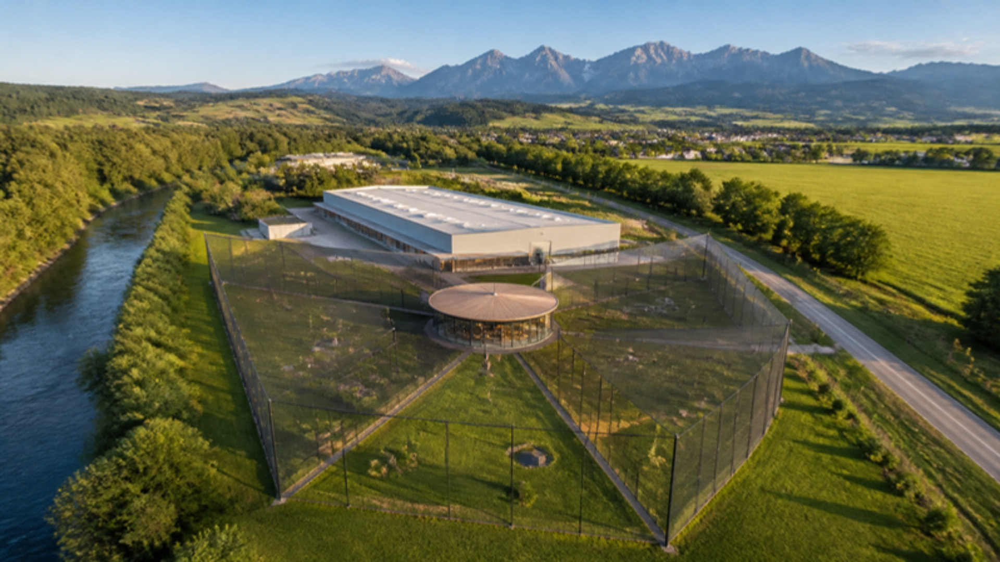
Štúdia a vizualizácia chovnej stanice sokolov na pozemku pri hale č. 98 (parcela 4930/15) v Spišskej Starej Vsi: dvojpodlažná chovná hala, tri letové sekcie po 2 400 – 2 600 m² a centrálna presklená loža v štýle arabského majlisu, z ktorej vidieť lietajúce sokoly.
Areál leží na severnom okraji mesta medzi cestou SNP a potokom Rieka, asi 1 km od Dunajca a poľskej hranice, na dohľad od Pienin. Existujúca dvojpodlažná priemyselná hala (súp. č. 98, parcela 4930/15) má pevnú železobetónovú konštrukciu vhodnú na prestavbu na chovné komory. Pozemok pre voliéry je rovinatá lúka za halou so stranami 90 / 89 / 92 / 91 m (≈ {{PARCEL}} m² podľa katastra).
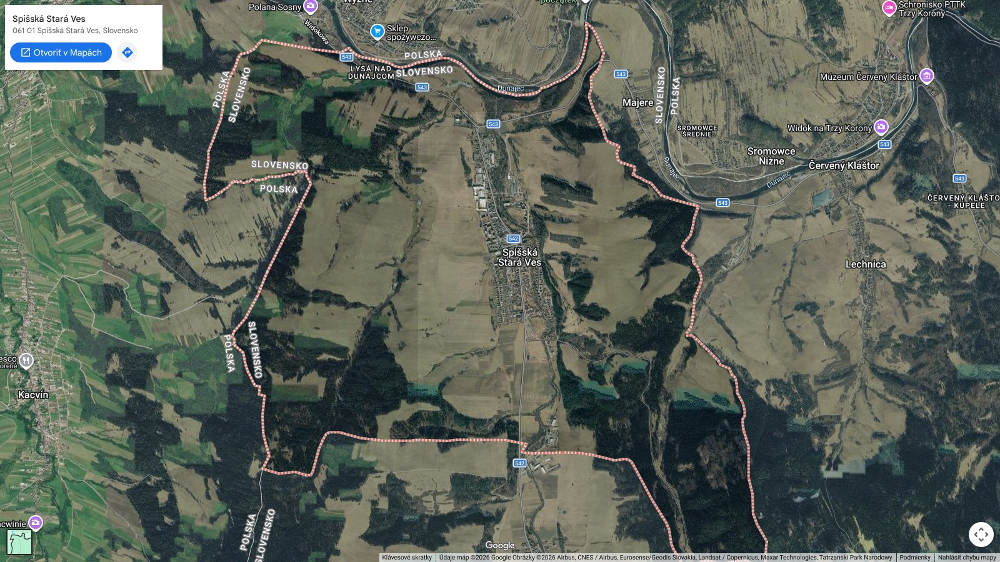
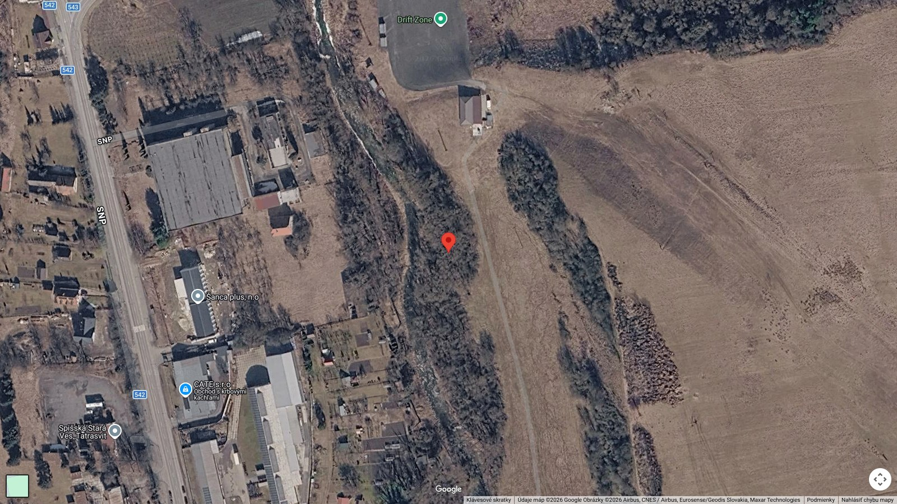
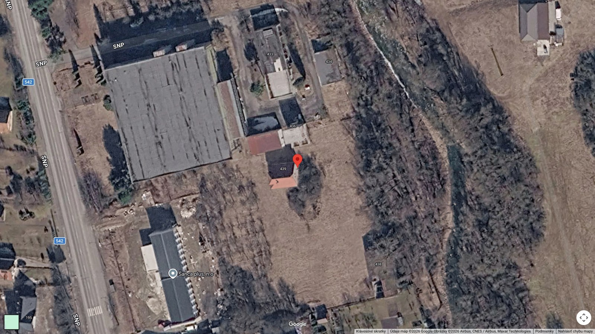
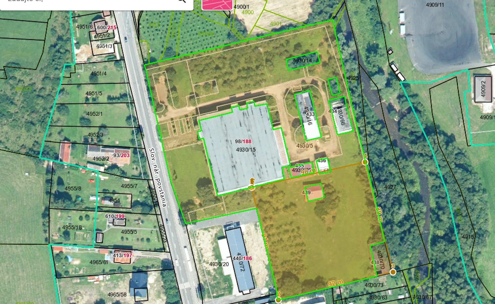
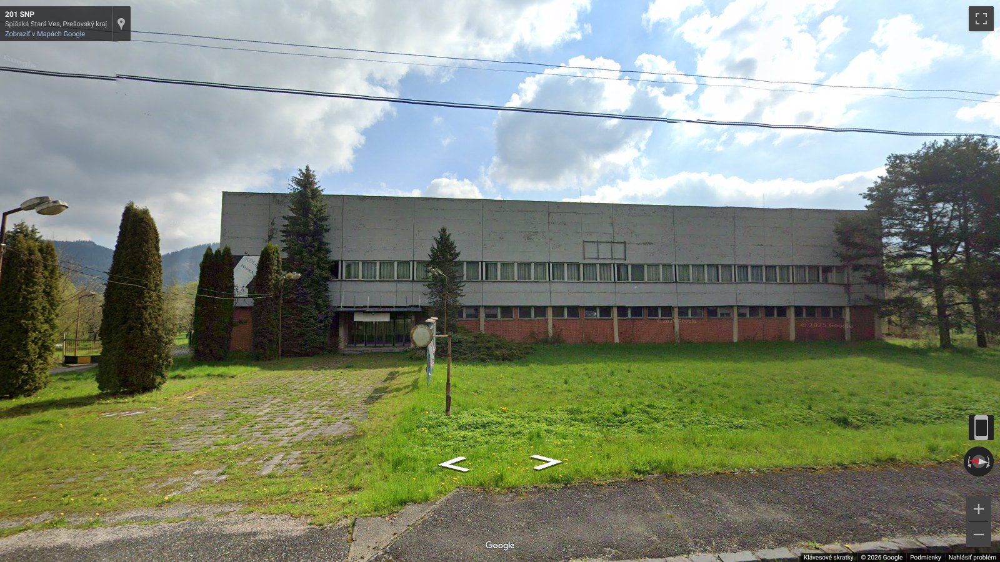
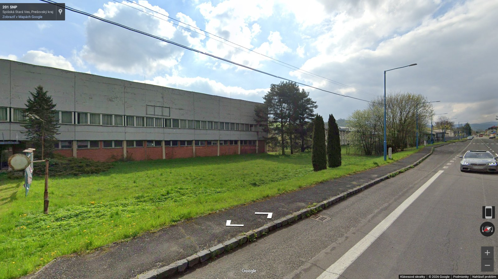
GPS stredu pozemku ≈ 49.3938 N, 20.3570 E. Satelitné snímky © Google; katastrálna mapa © ÚGKK SR / ZBGIS.
Pozemok delíme z jedného stredu na tri výseče po 120°. Každá sekcia má vlastný vstup cez bezpečnostnú predsieň, vlastný prístrešok a kúpeľ. V strede stojí kruhová loža, ktorej tri presklené steny smerujú do troch voliér – z jedného miesta vidno všetky tri línie sokolov. Loža je krytou chodbou prepojená s existujúcim domom č. 439, ktorý slúži ako recepcia a zázemie pre hostí.
| Objekt | Plocha | Funkcia | Poznámka |
|---|---|---|---|
| Chovná hala (4930/15) | ≈ 4 000 m² / podlažie | chovné komory, liaheň, odchovňa, veterina, sklady | existujúca 2-podlažná hala, prestavba |
| Sekcia A – východ | ≈ {{AREA_A}} m² | letová voliéra · Gyr pure | najtienistejšia strana pri stromoradí – vyhovuje gyrom |
| Sekcia B – juh | ≈ {{AREA_B}} m² | letová voliéra · Golden Saker | najslnečnejšia časť pozemku |
| Sekcia C – západ | ≈ {{AREA_C}} m² | letová voliéra · Gyr × Shaheen | pri dvore haly – krátka cesta z komôr |
| Loža · majlis | ∅ 22 m · ≈ 200 m² interiér + terasa | posedenie, čaj, pozorovanie sokolov cez tónované sklo | kruhový pavilón v strede pozemku |
| Recepcia (dom 439) | ≈ 120 m² | vstup hostí, kuchynka, WC, kancelária | existujúci dom, prepojený krytou chodbou (≈ 35 m) |
| Spolu voliéry | ≈ {{AREA_SUM}} m² | každá sekcia nad požadovaným minimom 2 000 m² | |
Prečo kruh a tri výseče? Delenie z jedného stredu dáva každej sekcii približne rovnakú plochu, najdlhšiu možnú letovú dráhu (uhlopriečka výseče 55 – 70 m) a loži výhľad do všetkých troch voliér bez toho, aby sa hostia museli presúvať. Sokoly rôznych línií sa navzájom nevidia cez dvojité sieťové steny s medzerou 1 m, takže nedochádza k stresu ani k útokom cez sieť.
Hala sa prestavia na uzavretú chovnú stanicu s kontrolovaným prístupom. Prízemie preberie všetko, čo potrebuje liaheň a personál; celé horné podlažie tvoria chovné komory so strešnými svetlíkmi, v ktorých páry hniezdia v pokoji a bez kontaktu s ľuďmi.
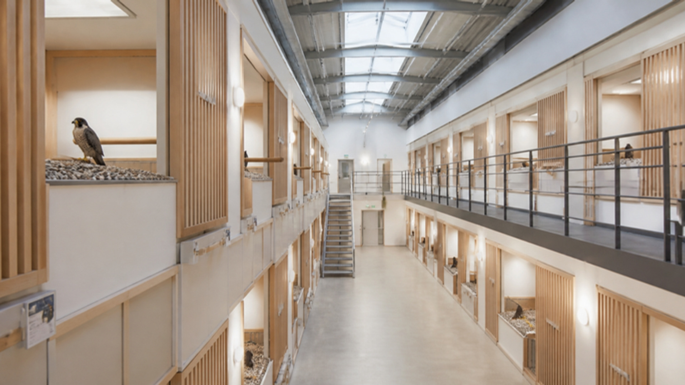
Voľný let je to, čo odlišuje špičkového sokola od priemerného. Každá línia má vlastnú sekciu s letovou dráhou 55 – 70 m, aby si mladé sokoly vybudovali svaly, vytrvalosť a istotu v lete ešte pred predajom a výcvikom.
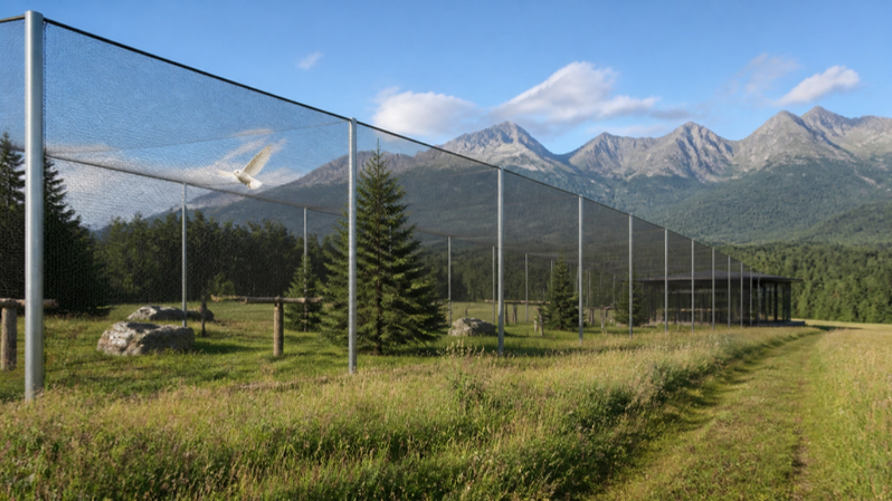
≈ {{AREA_A}} m² · východ, pri stromoradí
≈ {{AREA_B}} m² · juh, najslnečnejšia
≈ {{AREA_C}} m² · západ, pri dvore haly
Kruhový pavilón v strede pozemku je miesto, kde sa s klientmi z Perzského zálivu sedí tak, ako sú zvyknutí: nízke sedenie, dallah s kávou, čaj, datle – a za tónovaným sklom tri letové voliéry s gyrmi, sakermi a hybridmi. Sklo je z vnútra voliér tmavé a označené, aby sokoly nenarazili.
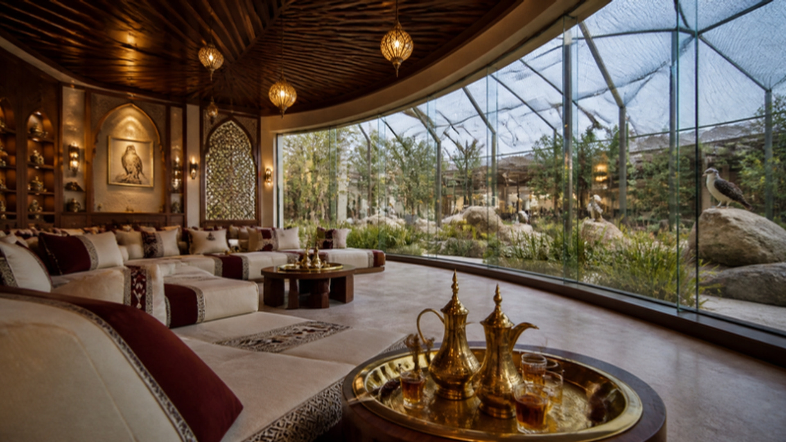
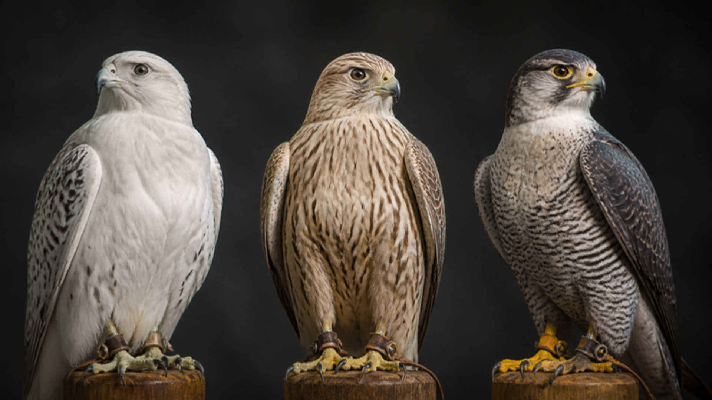
Falco rusticolus · biela a strieborná forma
Falco cherrug · zlatá (svetlá) forma
F. rusticolus × F. peregrinus (peregrinator / babylonicus)
Kapacita: 40 chovných komôr na 2. NP + 8 komôr na 1. NP umožňuje pri 25 – 30 obsadených pároch produkciu 60 – 100 mláďat ročne. Každé mláďa dostane uzavretý krúžok, mikročip, CITES doklad a rodokmeň – rovnaký štandard ako v e-shope na falconsvalley.com.
Geodetické vytýčenie pozemku, statický posudok haly, architektonická štúdia a projekt pre územné / stavebné konanie (zmena účelu stavby).
Registrácia chovu a CITES (MŽP SR, ŠOP SR), schválenie RVPS / ŠVPS, evidencia chovných jedincov, karanténny režim.
1. NP: liaheň, odchovňa, veterina, kuchyňa krmiva, mraziarne. 2. NP: 40 chovných komôr so svetlíkmi, servisná chodba, kamery.
Základy a stĺpy, drevené obvodové steny, siete, bidlá a kúpele; kruhový pavilón lože, tónované sklo, krytá chodba k domu 439.
Presun chovných párov pred sezónou (október – december), aby si zvykli na komory pred znáškou vo februári až apríli.
Odchov mláďat, voľný let vo voliérach od júna, prvé návštevy klientov v loži v júli – septembri, predaj od augusta.
Dôležité: situačný plán je zakreslený orientačne podľa katastrálnej mapy a satelitnej snímky Google (odchýlka do ± 3 m). Vizualizácie interiérov a exteriérov sú koncepčné AI rendery pre predstavu o atmosfére, nie projektová dokumentácia. Plochy sekcií sa po geodetickom zameraní spresnia; všetky tri sekcie majú rezervu nad požadovaným minimom 2 000 m².